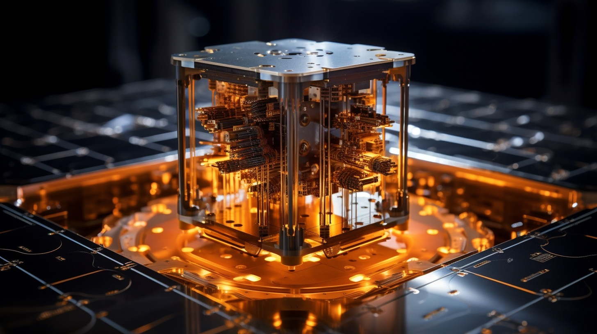

What is Digital Identity?
Digital identity, in simple terms, is any data you share online that can be linked back to you.
This could be anything from emails or usernames, to bank info and medical records. This sounds bad in a few ways at first,
but there are some good things about this. Something good about having a digital identity would be that you can better represent yourself online,
meaning that people would be able to better recognize you online as well. There are some bad things about this though, such as the biggest risk,
identity theft. With how important digital identity is to us, and how much we rely on it when using social media for example, we have to disregard some of the risks,
and us as the user have to protect ourself better.
What Makes Up Digital Identity?
Digital identity is made whenever you do something as simple as making an email,
but a better example would be when making a social media account. All of the info on your social media account that can be linked back to you,
emails, usernames, passwords, would be sent to a database, and this is how a digital identity is made.
Careers in Digital Identity
- Senior Digital Identity Analyst
- Digital Marketing Specialist
- Identity Access Management Architect
Helpful Websites
Avast's Article on Digital Identity
What is AI?
Artificial intelligence is in simple is any application that can perform tasts that would previously be done by a human,
such as playing chess. Chess isn't the only thing AI can do though, as in the past year AI has been able to perform vastly more complicated tasts,
such as making pictures, writing essays, and even generating videos. Cars have also been able to implement AI, as they have been developing self-driving cars using AI.
This is already implemented to a certain extent, as Tesla cars have a self-driving mode on them that has been being developed with AI.
How is AI Made?
AI is made by having a machine with a really high-performace computing capability,
and large data sets to train on. Both of these will allow an AI to become very well trained,
allowing them to have more accurate answers and responses. Having a high-computing power also allows the AI to train quickly,
train on multiple different data sets, and be used by multiple different users at once.

Careers in AI
- Machine Learning Engineer
- Robotics Engineer
- Natural Languange Processing Engineer
Helpful Websites
Oracle's Article on Artificial intelligence
What is Quantum Computing?
Quantum mechanics, in simple, is when a new type of computer, a quantum computer,
uses quantum mechanics to solve problems too complex for normal computers you’re used to.
Normal computers usually use bits inside of them, this is what you would find in any computer that you look at,
but quantum computers use qubits instead. The difference between these, is that normal bits can only store a one,
or a zero, while qubits can store both in any combination simultaneously. This allows quantum computers to be vastly
more efficient than normal computers in calculations.
This can allow us to vastly increase the speed of production in many different types of workflows.
For example, Google, in 2019, announced that a quantum computer solved a problem in 200 seconds,
and this problem would’ve taken a normal computer 10,000 years. This can easily be paired with AI,
or any other type of learning algorithm, or solving process, to train AI, solve problems,
and accelerate the workflow much more than any normal computer.
How Does Quantum Computing Work?
Quantum computing is made from quantum computers,
which in turn are made from quantum hardware. Quantum hardware mainly just uses superconductors and microwaves,
the same things you would heat food up with. A superconductor is a material that, when at a super low temperature,
can have electrons move through them without resistance. Along with superconductors, microwaves are used to control the qubits.
This allows us to place qubits in a state of superposition, which is what makes them so useful.

Careers in Quantum Computing
- Quantum Systems Technician
- Quantum Hardware/Software Engineer
- Quantum Mechanics Developer
Helpful Websites
IBM's Article on Quantum Computing
IBMs Building in NYC
What is Cloud Computing?
Cloud computing, in simple, is the delivery of computing services over the
internet. This can include servers, storage, networking, software, and anything
you would need over the internet. This can allow an increased productivity for many
people and businesses, since this would allow them to more easily transfer data
for working at home, submitting reports or assignments, and just being more easily
able to access data from any system with access to the internet. This is even used at
BCTC through OneDrive, as OneDrive is cloud computing in the form of data storage,
since this is what we hold all of our assignments and data on.
How Does Cloud Computing Work?
Cloud computing is made up of physical, or virtual servers that people are able to send and
recieve data from. This can be done through an internet connection, and files being stored in
a virtual server, such as OneDrive, and this allows people to access their files and data from
anywhere. Virtual servers aren't completely virtual though, as they are usually hosted at a
remote data center where all of the data is kept, and this is constantly able to be accessed
from the internet through websites sich as Microsoft Office where you can access OneDrive.

Careers in Cloud Computing
- Cloud Administrator
- Cloud Support Engineer
- Cloud Automation Engineer
Helpful Websites
Microsoft Azure's Article on Cloud Computing
What is Augmented Reality?
Augmented reality, in simple, is similar to VR, but instead of generating
a completely new environment, it instead takes digital images, such as videos, apps,
or even objects, and layers them onto the real world, which you can see through a camera.
A good contrast between AR and VR would be that in VR, you could transport yourself to
an underwater environment, seeing everything around you such as the fish swimming around,
while in AR, you could see those same fish swimming around inside of your room, or
wherever you are
How Does Augmented Reality Work?
Augmented reality is a little more complicated than how VR works, as
AR layers the digital objects in front of you, meaning it uses a lot more cameras and sensors.
This is why some VR headsets have cameras, as some of them have a small AR mode so that you
can tell where you are without taking the headset off. The main type of AR headsets are
ones with a built in screen, similar to AR headsets, though there are some that use your phone
as a camera. These generally are cheaper, yet have much worse peformance compared to the former.
What is Virtual Reality?
Virtual reality is actully quite simple, all it does is place you
inside of a computer generated world whenever you put on the a VR headset. This
is done with a computer generating a world using 3D graphics, and then placing you
inside of that world. There are usually also sensors and cameras on a VR headset
as well to know where you are, and some newer headsets will alert you if you get
close to real world objects.
How Does Virtual Reality Work?
Virtual reality only works with a good enough computer than can handle
rendering a computer generated world. This is just the computer though, as the VR headset
itself also has a high reloution screen inside of it that you can see through, and a headset
would also usually have speakers in them as well, or some way for you to get an audio output.
There can also be sensors and cameras on the headset and these can have various use cases depending
on the applications you use inside of VR.

Careers with Augmented Reality
- Performance Engineer
- AR Camera Driver Engineer
- AR System Software Engineer

Careers with Virtual Reality
- VR Engineer
- Visual Systems Designer
- VR System Software Engineer
Helpful Websites
GFCGlobal's Article on VR/AR
What are Electric Vehicles?
Electric vehicles are very similar to normal cars that you may see,
while the only difference is that electric vehicles run on electricity
that is stored in a battery, instead of gas like normal cars would use. This
can have many benefits to society, especially when it comes to air pollution.
Gas powered cars constantly spew out harmful gases into the atmosphere, while electric
vehicles don't have any emissions at all.
How Do Electric Vehicles Work?
Electric vehicles are made very similar to normal cars, with the main difference
being the engine. Instead of an engine, electric vehicles use an electric motor that
drives the wheels. Along with the engine, everything else in the vehicle as well is
controled by just electricity, inluding the heating/cooling, transmission, and many other
components.
Careers with Electric Vehicles
- Cloud Administrator
- Cloud Support Engineer
- Cloud Automation Engineer
Helpful Websites
U.S Department of Energy's Article of how Electric Cars Work
What is Renewable Energy?
Renewable energy, in simple, is any energy that you can use
that comes from our planet, such as solar, geothermal, wind, and many more.
Hydropower is also one of the best types of renewable energies (depending on
where you live), and is very efficient in creating a stable source of electricity.
Solar power is also one of, if not the largest sources of renewable energy. Solar panels
have been being used for a long time, and have only been getting more and more popular,
as you can even put them on your homes to get a steady source of electricity.
How Does Renewable Energy Work?
Renewable energy is made from many different types of technologies depending on what
type of electricity you are trying to achieve. PV panels are the types of panels that achieve solar power,
and these capture the energy that the Sun gives off so that we can use that energy ourselves. Hydropower is
captured through dams or diversion structures, with the water pushing some type of wheel that would be what's actually
actually generating the electricity.
Careers in Renewable Energy
- Environmental Technician
- Solar Installer
- Recycling worker
Helpful Websites
EERE's Website on Renewable Energy